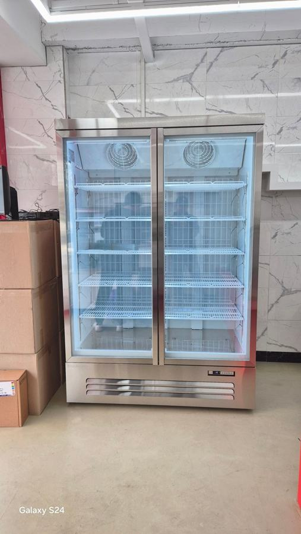
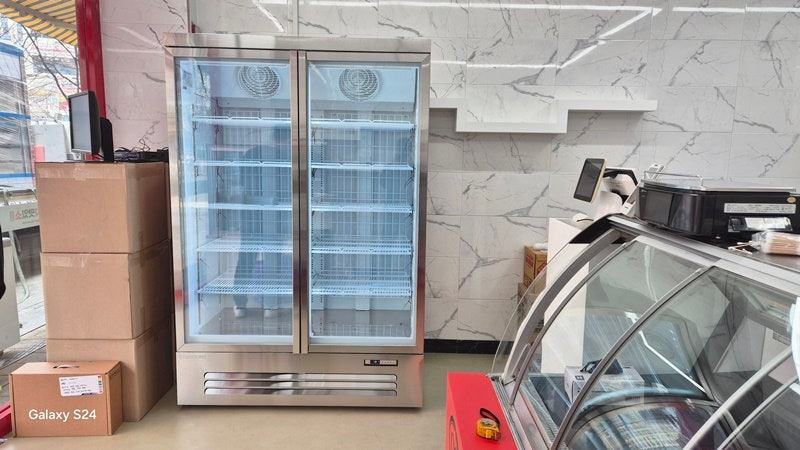
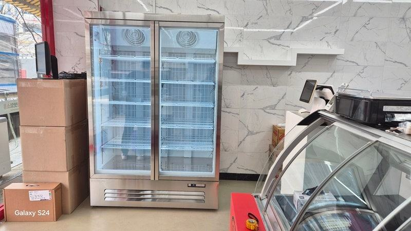
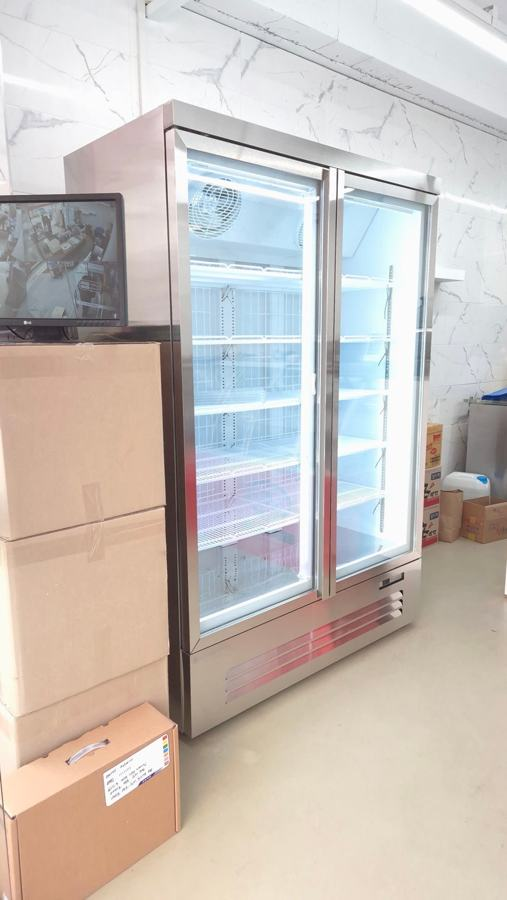
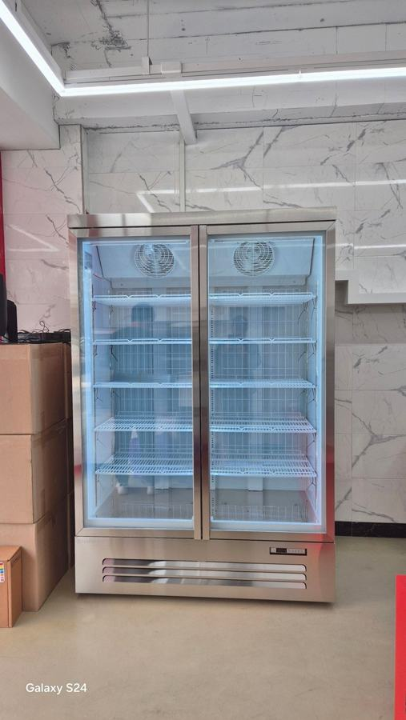
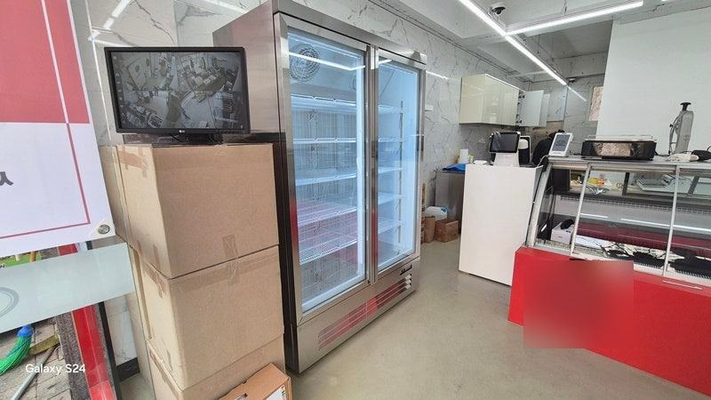
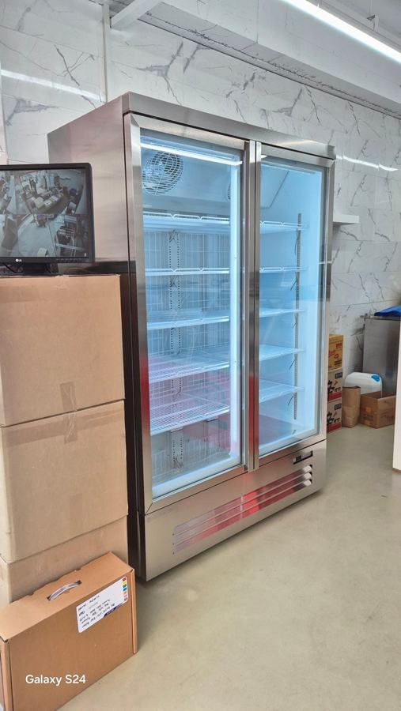
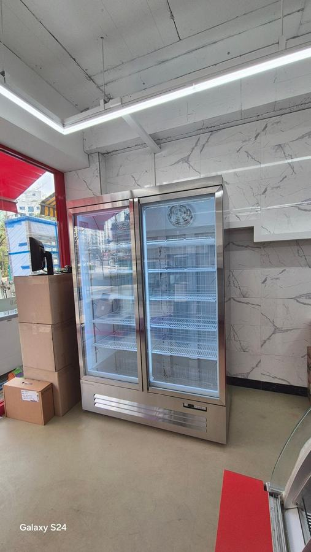
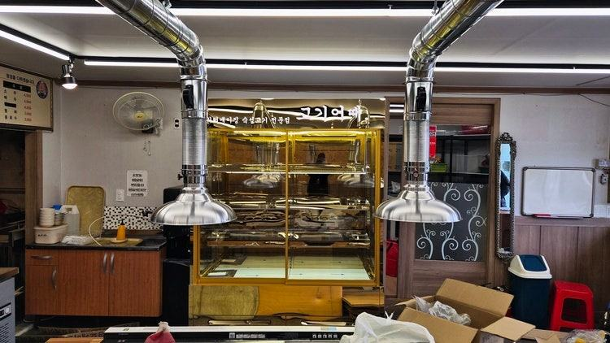
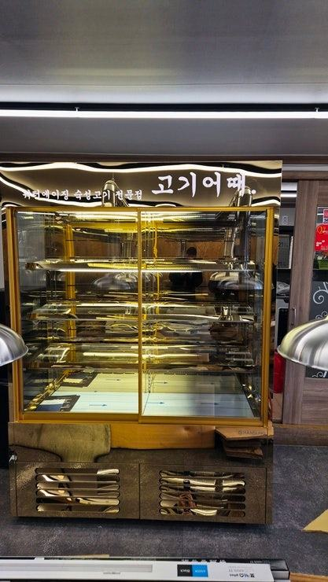

정육쇼케이스
정육점 창업비용, 냉장 설비에서 줄여도 되는 곳과 안 되는 곳

정육점 창업비용에서 정육쇼케이스와 원육 보관 냉장고의 냉각 성능, 그리고 A/S 체계는 줄이면 안 되는 부분입니다. 대신 외관 옵션이나 당장 쓰지 않는 추가 진열대는 오픈 후 판매 흐름을 보고 늘려도 늦지 않습니다.
안녕하세요. 정육점 냉장 설비를 맞춤으로 만들고 있는 한성쇼케이스입니다.
정육점 창업을 준비하시는 사장님들과 이야기를 나누다 보면 예산표를 몇 번이고 고쳐 쓰셨다는 말씀을 자주 듣습니다.
보증금과 인테리어는 줄이기 어렵다 보니, 결국 설비 쪽에서 어디까지 줄일 수 있을지를 고민하시게 되죠.
그런데 정육점은 고기가 상품이고, 그 고기를 지키는 것이 냉장 설비입니다. 설비에서 잘못 아끼면 오픈 후에 버리는 고기와 수리비로 다시 나가는 경우가 많습니다.
오늘은 정육점 창업비용 가운데 냉장 설비를 어떻게 나눠 보면 좋은지, 줄여도 되는 곳과 줄이면 안 되는 곳을 구분해서 정리해 드리겠습니다.
1. 창업비용 안에서 냉장 설비가 차지하는 자리
정육점 창업비용은 크게 점포 보증금과 권리금, 인테리어, 냉장 설비, 작업 장비, 첫 원육 매입과 포장재로 나뉩니다.
이 중 냉장 설비는 한 번 들이면 매일 24시간 돌아가며 오래 쓰는 장비라, 초기 비용만큼 이후 유지비와 고장 위험까지 함께 계산해야 합니다.
냉장 설비도 다시 나눠 보면 손님에게 보이는 정육쇼케이스, 원육을 보관하는 냉장·냉동고, 숙성육을 다룬다면 숙성고로 구성됩니다.
판매 방식에 따라 어느 쪽에 비중을 둘지가 달라집니다.
- 판매용 정육쇼케이스
- 원육 보관 냉장·냉동고
- 숙성육을 다룬다면 숙성고
2. 줄이면 안 되는 곳
첫째는 냉각 성능입니다. 여름철이나 습한 날에 유리에 결로가 생기거나 온도가 흔들리면 고기 색이 변하고 손님 눈에도 신선해 보이지 않습니다.
정밀하게 온도를 맞출 수 있는 컨트롤러와 믿을 수 있는 콤프레셔인지 꼭 확인하세요.
둘째는 A/S입니다. 냉장 설비가 한여름에 멈추면 그날 진열한 고기를 통째로 버려야 할 수 있습니다.
가까운 곳에서 바로 수리가 가능한지, 출고 후 무상 A/S 기간이 있는지를 비용 비교표에 함께 적어 두세요.
셋째는 조명입니다. 고기는 조명 색과 각도에 따라 보이는 모습이 크게 달라져, 여기서 아끼면 매일 판매에 영향이 갑니다.


3. 나중으로 미뤄도 되는 곳
처음부터 진열대를 넉넉하게 들이기보다, 주력 부위를 진열할 메인 쇼케이스 한 대로 시작한 뒤 판매가 늘면 같은 디자인으로 추가하는 방법이 있습니다.
같은 규격과 색으로 맞추면 나중에 붙여도 한 줄로 이어진 진열대처럼 보입니다.
외관 소재나 고급 마감 옵션도 매장 콘셉트에 꼭 필요한 것이 아니라면 우선순위를 낮출 수 있습니다. 대신 나중에 추가할 자리와 전원은 처음 공사 때 미리 마련해 두셔야 다시 공사하는 비용이 들지 않습니다.
- 메인 쇼케이스 한 대로 시작
- 추가할 자리와 전원은 미리 확보
- 외관 옵션은 콘셉트 기준으로 선택
4. 예산표에서 자주 빠지는 비용
설비 본체 금액만 적고 배송, 반입, 설치 비용을 빼 두는 경우가 많습니다. 계단이 있거나 출입문이 좁은 매장은 반입 방법에 따라 비용이 달라질 수 있으니 미리 확인하세요.
전기 공사도 놓치기 쉽습니다. 냉장 설비가 여러 대 들어가면 전용 회로와 콘센트가 필요할 수 있어, 인테리어 업체와 설비 업체가 같은 도면을 보고 이야기하도록 해 두시는 것이 좋습니다.
체크리스트
- 판매용·보관용·숙성용 설비 구분
- 냉각 성능과 온도 컨트롤러
- A/S 거리와 무상 기간
- 고기 색을 살리는 조명
- 추가 설비 자리와 전원
- 배송·반입·설치·전기 공사 비용
현장에서 자주 보는 경우: 오래된 정육점 냉장고 때문에 생기는 손실
정육점 사장님들께 가장 많이 듣는 고민은 좋은 고기를 준비해도 냉장고가 제 역할을 못한다는 것입니다.
여름이나 습한 날에는 결로 때문에 고기가 잘 보이지 않고, 온도 관리가 흔들려 색이 변하며, 오래된 장비는 전기료와 잦은 고장까지 겹칩니다.
그래서 상담 때는 매장 크기, 고객 동선, 인테리어 분위기를 함께 보고 구성을 제안합니다. 고기 색이 살아나도록 LED 조명 각도를 설계하고, 디지털 온도 컨트롤러로 온도를 정밀하게 관리하며, 원하는 사이즈와 색상으로 맞춘 완제품을 배송해 드립니다.
설치 후에는 전국 240여 개 A/S 센터로 사후관리를 이어 갑니다.










자주 묻는 질문
정육점 창업비용을 줄이려면 중고 쇼케이스가 나을까요?
연식이 짧고 A/S가 되며 매장 폭에 맞는 매물이라면 고려해 볼 수 있습니다. 하나라도 어긋나면 수리비와 고기 폐기 손실이 차이를 넘어설 수 있으니 함께 계산해 보세요.
처음부터 숙성고까지 갖춰야 할까요?
숙성육을 주력으로 팔 계획이라면 처음부터 자리를 잡는 것이 좋습니다. 아니라면 판매 흐름을 보고 추가해도 되지만, 들어갈 자리와 전원은 미리 남겨 두세요.
설비 견적을 비교할 때 무엇을 맞춰야 하나요?
길이, 냉각 방식, 유리 형태, 조명, A/S 조건, 배송·설치 포함 여부를 같은 조건으로 맞춘 뒤 비교하셔야 실제 차이가 보입니다.
매장 조건에 맞춰 만드는 한성쇼케이스
원하시는 제품 사진과 설치할 공간 사진만 보내 주셔도 매장에 맞는 구성을 추천해 드립니다.
- 전국 240여 개 A/S 전담 센터 운영
- 본사 대량 자재 매입으로 품질 대비 합리적인 가격
- 유럽제·삼성 냉각 콤프레셔 적용
- 국내 최초 쇼케이스 전문 디자이너 상주
매장 폭과 원하는 진열 구성을 알려 주세요. 실측과 견적을 안내해 드립니다.
031-986-2458